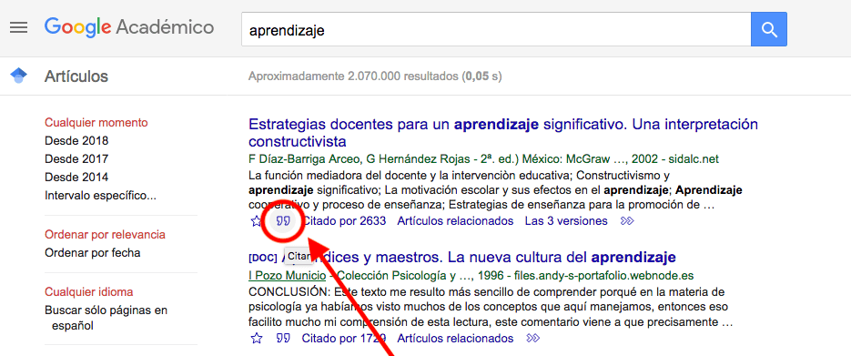
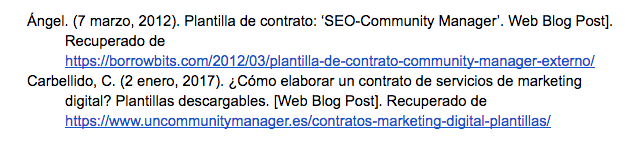

Bibliografía en la Programación Didáctica
Para que tu trabajo tenga rigor académico y cobre notoriedad, debes incluir al final un apartado de bibliografía en la programación didáctica.
Si eres de los que se hace un lío con las citas y las referencias o no sabes muy bien dónde encontrar recursos en lo que apoyar tu discurso, ¡sigue leyendo!
Normas APA en la bilbiografía de la programación didáctica
Las normas APA tienen como objetivo homogeneizar el formato de los textos científicos para que resulte más sencillo leerlos. Así, abramos el libro que abramos, si sigue las normas APA, tendrá el mismo aspecto que los demás. Seguro que ya lo has comprobado. Vamos a lo importante: ¿cómo citar en la programación didáctica?
Libros
Si quieres citar una frase de un libro en tu texto, es decir, fuera de la bibliografía, lo que tienes que hacer es incluir el aprellido del autor y el año de publicación del libro entre paréntesis.
El proceso de aprendizaje a través de retos motivadores adaptados al alumno ayuda al proceso de resolución de conflictos cognitivos.
Casafont y Casas, 2017
Si queremos añadir este libro a la bibliografía al final de nuestro trabajo, debemos hacerlo con el siguente formato: Apellido, iniciales. (Año). Título del libro. Ciudad y país. Editorial.
Casafont, R. y Casas, L. (2017). Educarnos para educar. Neuroaprendizaje para transformar la educación. Barcelona, España. Paidós.
¿Quieres conocer un truco? Para añadir libros a la bibliografía de tu programación educativa puedes ir a Google Académico. Al escribir el título de la obra en el buscador, aparecerán una lista de resultados. Pulsa uno de los botones que hay debajo del título, el que tiene forma de comillas y deja que surja la magia.

Libros electrónicos en línea
Si consultas un libro que está colgado en la web, por ejemplo en formato pdf, y quieres añadirlo a tu bibliografía, debes hacerlo así: Apellido, inicial. (Año). Título del libro. Recuperado de [enlace a libro].
Unamuno, M. (1914). Niebla. Recuperado de https://cvc.cervantes.es/literatura/aispi/pdf/09/09_133.pdf
Blog
Habitualmente, buscamos recursos en Internet por ser una opción rápida y accesible. Y a menudo, terminamos en blogs especializados donde, finalmente, encontramos lo que estábamos buscando. Si este es tu caso, debes añadir a la bibliografía de tu programación docente lo siguente: Apellido, inicial del nombre. (Fecha). Título del artículo [Artículo en un blog o Web Blog Post]. Nombre del blog. Recuperado de [enlace del sitio web].
Vírgula. (16 octubre, 2018). Cómo hacer una programación didáctica [Artículo en un blog]. Programaciones didácticas Vírgula. Recuperado de .
Si has visitado varios artículos de un mismo blog, entonces no has de citar solo un post, sino el blog completo de esta forma: Apellido, incial. (Fecha). Nombre del blog [Blog]. Recuperado de [enlace del sitio web].
Moreno, A. (2018). Programaciones Didácticas Vírgula [Blog]. Recuperado de https://programacionesdidacticasvirgula.com.
Páginas web
Como decíamos en el apartado anterior, muchas veces acudimos a la web para informarnos. Si en lugar de en un blog terminas dando con una página web completa que da respuesta a tus preguntas, el formato para referenciarla es este: Apellido, iniciales. (Fecha). Nombre del sitio web: Título de la página o sección. Recuperado de [enlace].
TodoFP (2018). TodoFP: Biblioteca TodoFP. Recuperado de https://todofp.es/profesores/biblioteca-todofp.html
¿Qué diferencia hay entre página web y blog? Una página web es un sitio estático. Aunque puede actualizarse y añadir o eliminar contenido, no lo hace con frecuencia. En cambio el blog está pensado para ir añadiendo artículos cada pocos días o incluso todos los días. Los contenidos están organizados por categorías y/o por etiquetas y puedes navegar por ellos con total libertad. Una página web se divide en secciones ya completas cuando se publican.

Mis 10 consejos para preparar la programación
Wikipedia
De manera complementaria a las anteriores, también puedes acudir a esta gran enciclopedia de Internet. En ese caso, debes citarlo en tu programación didáctica de esta forma: Nombre del artículo. (Sin fecha). En Wikipedia. Recuperado el [día] de [mes] de [año] de [enlace].
Esqueleto humano. (Sin fecha). En Wikipedia. Recuperado el 17 de diciembre de 2018 de https://es.wikipedia.org/wiki/Esqueleto_humano.
Informes
En educación es interesante recurrir a informes que nos ayuden a explicar la situación actual y los retos de cara al futuro. ¿Cómo lo referenciamos?: Nombre de la organización. (Año). Título del informe (Número del a publicación). Recuperado de [enlace].
Unesco. (2017). Resumen del informe de seguimiento de la educación en el mundo, 2019: Migración, desplazamiento y educación: construyendo puentes, no muros. Recuperado de https://unesdoc.unesco.org/ark:/48223/pf0000265996_spa.
TFG,TFM y Tesis doctorales
Navegando por la web en busca de información para completar la bibliografía de nuestra programación de aula también podemos dar con trabajos fin de grado, trabajos fin de máster o tesis muy útiles. El formato en este caso es el siguiente: Apellido, inicial. (Año). Título del trabajo (Trabajo fin de grado/Trabajo fin de máster/Tesis doctoral). Nombre de la institución, lugar.
Fernández, A. (2016). Mitología, con M de mujer. Un proyecto fotográfico sobre el papel de la mujer en los relatos mitológicos (Trabajo Fin de Grado). Universidad de Salamanca, Salamanca.
Vídeos
Autor, inicial. [Nombre de usuario]. (Año, mes, día). Título del vídeo [Archivo de vídeo]. Recuperado de [enlace].
Krewella. [Krewella]. (2013, mayo, 29). Krewella – Alive (Acoustic Version) [Archivo de vídeo]. Recuperado de https://youtu.be/S7dcA_N6EmQ?list=RDS7dcA_N6EmQ
Podcast
Apellido, inicial. (Fecha). Título del podcast [Audio podcast]. Recuperado de [enlace].
Martín, I. (13 diciembre, 2018). Qué aprende tu hijo cuando juega. [Audio podcast]. Recuperado de https://www.ivoox.com/que-aprende-tu-hijo-cuando-juega-imma-marin-audios-mp3_rf_30762972_1.html.
Formato de la bibliografía, webgrafía y legislación en la programación didáctica
Por último, hay que ordenar todas las referencias por orden alfabético, es decir, con la lista de libros y recursos que tienes, primero irán los apellidos que empiecen por A y los últimos serán los apellidos que empiecen por Z. En el caso de que haya más de un apellido con la misma inicial, nos fijaremos en la segunda letra y haremos lo mismo.
En cuanto a la sangría, una de las más usadas es la sangría francesa. Consiste en dejar la primera línea en su sitio y llevar las siguientes más a la derecha. Esto siempre que la referencia ocupe más de una línea, claro. Lo verás mejor en una imagen:

Lo que conseguimos así es que se vea bien dónde termina una referencia y empieza otra, de manera que se pueden leer bien los recursos que hemos usado. Recuerda que todo el trabajo que le facilites al lector, él lo agradecerá.
Referencia: Normas APA. (2016). Normas APA: Referencias y bibliografía. Recuperado de http://normasapa.com/
La normativa (leyes) que ya hemos citado anteriormente en su propio apartado, ¿haría falta volverlas a poner?
Sí, en la bibliografía va todo lo que hayas usado para informarte
Hola!
para citar tu blog es esta la info correcta? Moreno, A. (2018). Programaciones Didácticas Vírgula [Blog]. Recuperado de https://programacionesdidacticasvirgula.com.
Gracias.
Sí 🙂
hola!! las leyes las cuales he tenido como referencia para hacer la programación como van puestas?
https://normas-apa.org/referencias/citar-leyes-documentos-legales/